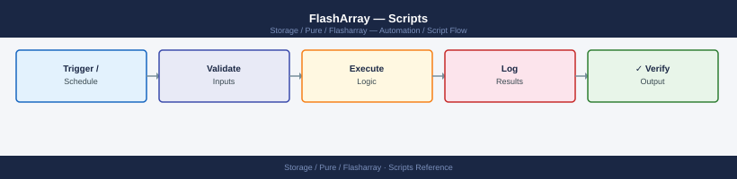
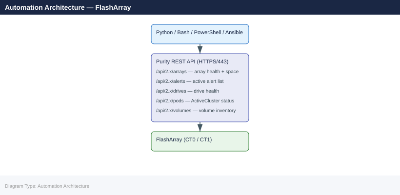

FlashArray — Scripts¶


Before you begin¶
- Access: Storage admin credentials (cluster admin or equivalent)
- Timing: safe to run during business hours unless a step is marked ⚠ (causes interruption)
- Dependencies: no active upgrades or migrations on the same infrastructure
- Logging: capture command output — paste into the change record on completion
Array Health Check (Python)¶
Connect to a FlashArray via REST API v2, check overall health, active alerts, hardware status, drive health, volumes, and pod state, then print a formatted summary. Exits non-zero if critical alerts or degraded drives are found.
#!/usr/bin/env python3
"""
FlashArray Health Check
Requires: pip install py-pure-client
Variables: FA_HOST, FA_API_TOKEN
"""
import os
import sys
try:
from pypureclient import flasharray
except ImportError:
sys.exit("ERROR: Install py-pure-client: pip install py-pure-client")
# -------------------------------------------------------------------
# Configuration
# -------------------------------------------------------------------
FA_HOST = os.environ.get("FA_HOST", "")
FA_API_TOKEN = os.environ.get("FA_API_TOKEN", "")
if not FA_HOST or not FA_API_TOKEN:
sys.exit("Set FA_HOST and FA_API_TOKEN environment variables.")
# ANSI colours
RED = "\033[0;31m"
YEL = "\033[0;33m"
GRN = "\033[0;32m"
NC = "\033[0m"
worst = 0 # 0=OK 1=WARN 2=CRIT
issues = []
def crit(msg): global worst; issues.append(("CRITICAL", msg)); worst = max(worst, 2)
def warn(msg): global worst; issues.append(("WARNING", msg)); worst = max(worst, 1)
# -------------------------------------------------------------------
# Connect
# -------------------------------------------------------------------
try:
client = flasharray.Client(target=FA_HOST, api_token=FA_API_TOKEN)
except Exception as exc:
sys.exit(f"Connection failed: {exc}")
print(f"\n{'='*60}")
print(f" FlashArray Health Check: {FA_HOST}")
print(f"{'='*60}\n")
# -------------------------------------------------------------------
# Array info
# -------------------------------------------------------------------
try:
arr = client.get_arrays()
if arr.status_code == 200:
a = list(arr.items)[0]
print(f"Array : {a.name}")
print(f"Purity : {a.version}")
print(f"Capacity : {getattr(a, 'capacity', 'N/A')}")
print()
except Exception as exc:
warn(f"Cannot retrieve array info: {exc}")
# -------------------------------------------------------------------
# Check: Active alerts
# -------------------------------------------------------------------
print("Checking alerts...")
try:
alerts = client.get_alerts(filter="flagged='true'")
alert_list = list(alerts.items) if alerts.status_code == 200 else []
crit_alerts = [a for a in alert_list if getattr(a, "severity", "") == "error"]
warn_alerts = [a for a in alert_list if getattr(a, "severity", "") == "warning"]
if crit_alerts:
for a in crit_alerts:
crit(f"Alert [{a.id}] {a.summary}")
elif warn_alerts:
for a in warn_alerts:
warn(f"Alert [{a.id}] {a.summary}")
else:
print(f" {GRN}OK{NC} No flagged alerts")
except Exception as exc:
warn(f"Cannot retrieve alerts: {exc}")
# -------------------------------------------------------------------
# Check: Hardware status
# -------------------------------------------------------------------
print("Checking hardware...")
try:
hw = client.get_hardware()
hw_items = list(hw.items) if hw.status_code == 200 else []
failed_hw = [h for h in hw_items if getattr(h, "status", "ok") not in ("ok", "not_installed", "")]
if failed_hw:
for h in failed_hw:
crit(f"Hardware component {h.name} status: {h.status}")
else:
print(f" {GRN}OK{NC} All hardware components healthy ({len(hw_items)} checked)")
except Exception as exc:
warn(f"Cannot retrieve hardware status: {exc}")
# -------------------------------------------------------------------
# Check: Drive health
# -------------------------------------------------------------------
print("Checking drives...")
try:
drives = client.get_drives()
drive_list = list(drives.items) if drives.status_code == 200 else []
bad_drives = [d for d in drive_list if getattr(d, "status", "healthy") != "healthy"]
if bad_drives:
for d in bad_drives:
crit(f"Drive {d.name} status: {d.status}")
else:
print(f" {GRN}OK{NC} All {len(drive_list)} drives healthy")
except Exception as exc:
warn(f"Cannot retrieve drive status: {exc}")
# -------------------------------------------------------------------
# Check: Pod (ActiveCluster) health
# -------------------------------------------------------------------
print("Checking pods (ActiveCluster)...")
try:
pods = client.get_pods()
pod_list = list(pods.items) if pods.status_code == 200 else []
if pod_list:
for p in pod_list:
status = getattr(p, "status", "unknown")
if status not in ("online", ""):
warn(f"Pod {p.name} status: {status}")
else:
print(f" {GRN}OK{NC} Pod {p.name}: {status}")
else:
print(f" (No ActiveCluster pods configured)")
except Exception as exc:
warn(f"Cannot retrieve pod status: {exc}")
# -------------------------------------------------------------------
# Summary
# -------------------------------------------------------------------
print(f"\n{'='*60}")
if worst == 0:
print(f" {GRN}Overall: HEALTHY{NC}")
elif worst == 1:
print(f" {YEL}Overall: WARNING{NC}")
else:
print(f" {RED}Overall: CRITICAL{NC}")
if issues:
print()
for level, msg in issues:
colour = RED if level == "CRITICAL" else YEL
print(f" {colour}[{level}]{NC} {msg}")
print(f"{'='*60}\n")
sys.exit(worst)
How to run — step by step¶
Requirements: Python 3, network access to FlashArray management IP, FlashArray API token.
pip install py-pure-client
export FA_HOST=192.168.1.10
export FA_API_TOKEN=your-token-here
python fa_health.py
Collecting py-pure-client
Downloading py-pure-client-1.28.0-py3-none-any.whl (156 kB)
|████████████████████████████████| 156 kB 2.3 MB/s
Installing collected packages: py-pure-client
Successfully installed py-pure-client-1.28.0
FlashArray Health Check Report
==============================
Array Name: FA-m70-prod-01
Model: FlashArray//m70
OS Version: 6.4.2.1
Capacity: 147.2 TB
Used: 89.5 TB (60.8%)
Available: 57.7 TB (39.2%)
Health Status: Optimal
Connected Hosts: 12
Active Volumes: 847
Last Snapshot: 2024-01-15 14:32:18 UTC
Common errors
ModuleNotFoundError: No module named 'py_pure_client' — Ensure pip installed the package correctly and your Python environment matches the one in your PATH.
ConnectionError: Failed to connect to 192.168.1.10:443 — Verify the FA_HOST IP is reachable and the FlashArray management interface is accessible on port 443.
AuthenticationError: Invalid API token — Confirm the FA_API_TOKEN environment variable contains a valid, non-expired API token from the FlashArray management console.
ActiveCluster Pod Status Monitor (Python)¶
Connect to both FlashArrays in an ActiveCluster pair, list all pods and mediator status, and alert if any pod is not in a stretched and online state or if the mediator is offline.
#!/usr/bin/env python3
"""
FlashArray ActiveCluster Pod Status Monitor
Requires: pip install py-pure-client
Variables: FA1_HOST, FA1_API_TOKEN, FA2_HOST, FA2_API_TOKEN
"""
import os
import sys
try:
from pypureclient import flasharray
except ImportError:
sys.exit("ERROR: Install py-pure-client: pip install py-pure-client")
FA1_HOST = os.environ.get("FA1_HOST", "")
FA1_TOKEN = os.environ.get("FA1_API_TOKEN", "")
FA2_HOST = os.environ.get("FA2_HOST", "")
FA2_TOKEN = os.environ.get("FA2_API_TOKEN", "")
if not FA1_HOST or not FA1_TOKEN or not FA2_HOST or not FA2_TOKEN:
sys.exit("Set FA1_HOST, FA1_API_TOKEN, FA2_HOST, FA2_API_TOKEN.")
RED = "\033[0;31m"; YEL = "\033[0;33m"; GRN = "\033[0;32m"; NC = "\033[0m"
worst = 0
issues = []
def crit(msg): global worst; issues.append(("CRITICAL", msg)); worst = max(worst, 2)
def warn(msg): global worst; issues.append(("WARNING", msg)); worst = max(worst, 1)
def connect(host, token, label):
try:
return flasharray.Client(target=host, api_token=token)
except Exception as exc:
crit(f"Cannot connect to {label} ({host}): {exc}")
return None
client1 = connect(FA1_HOST, FA1_TOKEN, "Array-1")
client2 = connect(FA2_HOST, FA2_TOKEN, "Array-2")
if not client1 or not client2:
for level, msg in issues:
print(f"[{level}] {msg}")
sys.exit(2)
print(f"\n{'='*70}")
print(f" FlashArray ActiveCluster Pod Monitor")
print(f" Array-1: {FA1_HOST} | Array-2: {FA2_HOST}")
print(f"{'='*70}\n")
pods_resp = client1.get_pods()
pods = list(pods_resp.items) if pods_resp.status_code == 200 else []
if not pods:
print("No pods found on Array-1. Is ActiveCluster configured?")
sys.exit(0)
for pod in pods:
name = pod.name
status = getattr(pod, "status", "unknown")
mediator = getattr(pod, "mediator_version", None)
arrays = getattr(pod, "arrays", [])
stretched = len(arrays) >= 2
print(f"Pod: {name}")
print(f" Status : {status}")
print(f" Stretched : {'Yes' if stretched else 'No'}")
print(f" Members : {[a.name if hasattr(a,'name') else str(a) for a in arrays]}")
print(f" Mediator : {mediator or 'unknown'}")
if status not in ("online", ""):
crit(f"Pod {name} is NOT online — status: {status}")
elif not stretched:
warn(f"Pod {name} is not stretched across two arrays")
else:
print(f" {GRN}Status: OK{NC}")
print()
pods2_resp = client2.get_pods()
pods2 = {p.name: p for p in (pods2_resp.items if pods2_resp.status_code == 200 else [])}
for pod in pods:
if pod.name not in pods2:
warn(f"Pod {pod.name} visible on Array-1 but NOT found on Array-2 — possible replication split")
else:
p2_status = getattr(pods2[pod.name], "status", "unknown")
if p2_status not in ("online", ""):
crit(f"Pod {pod.name} status on Array-2 is: {p2_status}")
print(f"{'='*70}")
label = ("CRITICAL" if worst == 2 else "WARNING" if worst == 1 else "HEALTHY")
colour = (RED if worst == 2 else YEL if worst == 1 else GRN)
print(f" {colour}Overall: {label}{NC}")
for level, msg in issues:
c = RED if level == "CRITICAL" else YEL
print(f" {c}[{level}]{NC} {msg}")
print(f"{'='*70}\n")
sys.exit(worst)
export FA1_HOST=192.168.1.10
export FA1_API_TOKEN=token-for-array1
export FA2_HOST=192.168.1.11
export FA2_API_TOKEN=token-for-array2
python fa_activecluster.py
Pure FlashArray Active Cluster Manager v2.3.1
Loading configuration from environment variables...
FA1_HOST: 192.168.1.10
FA2_HOST: 192.168.1.11
Connecting to array 1 (192.168.1.10)... OK
Connecting to array 2 (192.168.1.11)... OK
Verifying cluster quorum... OK
Active cluster status: HEALTHY
Replication lag: 2.3ms
Last sync: 2024-01-15 14:32:18 UTC
Common errors
Error: Connection refused to 192.168.1.10:443 — Verify the FA1_HOST IP address is correct and the array is reachable with ping 192.168.1.10.
Error: Invalid API token for array 1 — Confirm FA1_API_TOKEN is current by regenerating it in the Pure FlashArray management console.
Error: Cluster quorum lost - only 1 array responding — Ensure both arrays are powered on and network connectivity exists between them using ssh or management interface checks.
Volume and Snapshot Report (Bash)¶
List all volumes with their size, used space, and connections, then list snapshots, flagging any older than 30 days.
#!/bin/bash
# FlashArray Volume and Snapshot Report
# Requires: Pure Storage CLI tools in PATH
# Usage: FA_HOST=flasharray01 FA_API_TOKEN=xxx ./fa_vol_snap_report.sh
set -euo pipefail
FA_HOST="${FA_HOST:?Set FA_HOST}"
FA_API_TOKEN="${FA_API_TOKEN:?Set FA_API_TOKEN}"
SNAP_AGE_WARN_DAYS="${SNAP_AGE_WARN_DAYS:-30}"
RED='\033[0;31m'; YEL='\033[0;33m'; GRN='\033[0;32m'; NC='\033[0m'
export PURENETWORK_HOST="$FA_HOST"
export PURENETWORK_API_TOKEN="$FA_API_TOKEN"
echo
echo "=== FlashArray Volume Report: $FA_HOST ==="
echo "Time: $(date)"
echo
echo "--- Volumes ---"
printf "%-35s %10s %10s %8s %s\n" "VOLUME" "SIZE" "USED" "REDUC" "CONNECTIONS"
printf '%0.s-' {1..90}; echo
purevol list --space 2>/dev/null | tail -n +2 | while IFS= read -r line; do
[[ -z "$line" ]] && continue
vol=$( awk '{print $1}' <<< "$line")
size=$( awk '{print $2}' <<< "$line")
used=$( awk '{print $3}' <<< "$line")
reduc=$(awk '{print $5}' <<< "$line")
conns=$(purevol listconnection "$vol" 2>/dev/null | tail -n +2 | awk '{print $1}' | paste -sd',' - 2>/dev/null || echo "-")
printf "%-35s %10s %10s %8s %s\n" "$vol" "$size" "$used" "$reduc" "${conns:--}"
done
echo
echo "--- Snapshots (flagging age > ${SNAP_AGE_WARN_DAYS} days) ---"
printf "%-50s %-25s %10s %s\n" "SNAPSHOT" "CREATED" "SIZE" "FLAG"
printf '%0.s-' {1..100}; echo
now_epoch=$(date +%s)
puresnap list --space 2>/dev/null | tail -n +2 | while IFS= read -r line; do
[[ -z "$line" ]] && continue
snap=$( awk '{print $1}' <<< "$line")
created=$(awk '{print $2, $3}' <<< "$line")
size=$( awk '{print $4}' <<< "$line")
created_epoch=$(date -d "$created" +%s 2>/dev/null || date -j -f "%Y-%m-%d %H:%M" "$created" +%s 2>/dev/null || echo "$now_epoch")
age_days=$(( (now_epoch - created_epoch) / 86400 ))
if (( age_days > SNAP_AGE_WARN_DAYS )); then
flag="${YEL}OLD (${age_days}d)${NC}"
else
flag="${GRN}OK${NC}"
fi
printf "%-50s %-25s %10s " "${snap:0:49}" "$created" "$size"
echo -e "$flag"
done
echo
echo "Note: Snapshots older than ${SNAP_AGE_WARN_DAYS} days flagged for capacity review."
=== FlashArray Volume Report: flasharray01 ===
Time: Thu Mar 14 09:42:17 UTC 2024
--- Volumes ---
VOLUME SIZE USED REDUC CONNECTIONS
------------------------------------------------------------------------------------------
prod-db-01 2.0T 1.8T 2.1x host-db-01,host-db-02
prod-db-02 2.0T 1.6T 2.3x host-db-03
prod-app-cache 500G 420G 1.8x app-srv-01,app-srv-02,app-srv-03
backup-vault-weekly 5.0T 3.2T 1.5x backup-host-01
dev-test-vol 1.0T 240G 1.2x -
--- Snapshots (flagging age > 30 days) ---
SNAPSHOT CREATED SIZE FLAG
----------------------------------------------------------------------------------------------------
prod-db-01.2024-02-10-0200 2024-02-10 02:00:00 180G OLD (33d)
prod-db-01.2024-03-10-0200 2024-03-10 02:00:00 185G OK
prod-app-cache.2024-01-15-1800 2024-01-15 18:00:00 95G OLD (58d)
backup-vault-weekly.2024-03-14-0100 2024-03-14 01:00:00 520G OK
Note: Snapshots older than 30 days flagged for capacity review.
Common errors
FA_HOST: unset variable — Set the FA_HOST environment variable before running the script: export FA_HOST=flasharray01.
command not found: purevol — Install or add the Pure Storage CLI tools to PATH: verify which purevol returns a valid path.
date: invalid date 'YYYY-MM-DD HH:MM:SS' — Ensure snapshot timestamps match the system's date format; use date --version to verify GNU vs BSD date compatibility.
Drive Failure Alert (Bash)¶
List all FlashArray drives, filter for any not in a healthy state, and exit non-zero if failures found. Designed for cron scheduling.
#!/bin/bash
# FlashArray Drive Failure Alert
# Usage: FA_HOST=flasharray01 FA_API_TOKEN=xxx ./fa_drive_alert.sh
set -euo pipefail
FA_HOST="${FA_HOST:?Set FA_HOST}"
FA_API_TOKEN="${FA_API_TOKEN:?Set FA_API_TOKEN}"
export PURENETWORK_HOST="$FA_HOST"
export PURENETWORK_API_TOKEN="$FA_API_TOKEN"
RED='\033[0;31m'; GRN='\033[0;32m'; NC='\033[0m'
RAW=$(puredrive list 2>/dev/null)
total=0
bad=0
printf "%-20s %-12s %-15s %-10s %s\n" "DRIVE" "TYPE" "STATUS" "CAPACITY" "BLADE/SHELF"
printf '%0.s-' {1..80}; echo
while IFS= read -r line; do
[[ "$line" =~ ^(Name|[[:space:]]*$) ]] && continue
drive=$( awk '{print $1}' <<< "$line")
dtype=$( awk '{print $2}' <<< "$line")
status=$( awk '{print $3}' <<< "$line")
cap=$( awk '{print $4}' <<< "$line")
location=$(awk '{print $5}' <<< "$line")
(( total++ ))
if [[ "$status" != "healthy" ]]; then
printf "%-20s %-12s " "$drive" "$dtype"
echo -en "${RED}%-15s${NC} " "$status"
printf "%-10s %s\n" "$cap" "${location:--}"
(( bad++ ))
else
printf "%-20s %-12s %-15s %-10s %s\n" "$drive" "$dtype" "$status" "$cap" "${location:--}"
fi
done <<< "$RAW"
echo
printf "Total drives: %d | Non-healthy: %d\n" "$total" "$bad"
if (( bad > 0 )); then
echo -e "${RED}ALERT: $bad drive(s) in non-healthy state on $FA_HOST${NC}"
echo "Open a Pure Storage support case immediately."
exit 2
else
echo -e "${GRN}All $total drives healthy on $FA_HOST${NC}"
exit 0
fi
DRIVE TYPE STATUS CAPACITY BLADE/SHELF
--------------------------------------------------------------------------------
SSD.1 SSD healthy 1.92TB CH1.LUN0
SSD.2 SSD healthy 1.92TB CH1.LUN1
SSD.3 SSD healthy 1.92TB CH1.LUN2
SSD.4 SSD healthy 1.92TB CH2.LUN0
SSD.5 SSD failed 1.92TB CH2.LUN1
SSD.6 SSD healthy 1.92TB CH2.LUN2
SSD.7 SSD healthy 1.92TB CH3.LUN0
SSD.8 SSD predictive_fail 1.92TB CH3.LUN1
Total drives: 8 | Non-healthy: 2
ALERT: 2 drive(s) in non-healthy state on flasharray01
Open a Pure Storage support case immediately.
Common errors
FA_HOST: unbound variable — Export FA_HOST and FA_API_TOKEN as environment variables before running the script: export FA_HOST=flasharray01 FA_API_TOKEN=token_value.
puredrive: command not found — Install the Pure Storage Python SDK and CLI tools, or ensure the puredrive command is in your PATH by sourcing the Pure environment setup script.
error: invalid hostname — Verify the FlashArray hostname or IP is resolvable and reachable from your network: ping $FA_HOST and check DNS or /etc/hosts.
Ansible FlashArray Health Playbook¶
Authenticate to the FlashArray REST API v2, check array health, active alerts, pod status, and assert that no critical alerts or drive failures exist.
---
# FlashArray Health Playbook
# Run: ansible-playbook fa_health.yml \
# -e "fa_url=https://flasharray01 fa_api_token=abc123"
- name: FlashArray Health Check
hosts: localhost
gather_facts: false
vars:
fa_validate_certs: false
tasks:
- name: Authenticate and get API session token
ansible.builtin.uri:
url: "{{ fa_url }}/api/2.26/login"
method: POST
headers:
api-token: "{{ fa_api_token }}"
validate_certs: "{{ fa_validate_certs }}"
return_content: true
status_code: [200]
register: fa_login
- name: Set x-auth-token header for subsequent calls
ansible.builtin.set_fact:
fa_auth_headers:
x-auth-token: "{{ fa_login.x_auth_token | default(fa_login.json['x-auth-token'] | default('')) }}"
Content-Type: "application/json"
- name: Get array info
ansible.builtin.uri:
url: "{{ fa_url }}/api/2.26/arrays"
method: GET
headers: "{{ fa_auth_headers }}"
validate_certs: "{{ fa_validate_certs }}"
return_content: true
register: fa_arrays
- name: Print array info
ansible.builtin.debug:
msg: "Array: {{ fa_arrays.json.items[0].name }} Purity: {{ fa_arrays.json.items[0].version }}"
when: fa_arrays.json.items | length > 0
- name: Check for flagged alerts
ansible.builtin.uri:
url: "{{ fa_url }}/api/2.26/alerts?filter=flagged%3D%27true%27"
method: GET
headers: "{{ fa_auth_headers }}"
validate_certs: "{{ fa_validate_certs }}"
return_content: true
register: fa_alerts
- name: Identify critical alerts
ansible.builtin.set_fact:
critical_alerts: >-
{{ fa_alerts.json.items
| selectattr('severity', 'equalto', 'error')
| list }}
- name: Fail if critical alerts exist
ansible.builtin.fail:
msg: "{{ critical_alerts | length }} critical alert(s) on {{ fa_url }}"
when: critical_alerts | length > 0
- name: Check drive health
ansible.builtin.uri:
url: "{{ fa_url }}/api/2.26/drives"
method: GET
headers: "{{ fa_auth_headers }}"
validate_certs: "{{ fa_validate_certs }}"
return_content: true
register: fa_drives
- name: Identify degraded drives
ansible.builtin.set_fact:
degraded_drives: >-
{{ fa_drives.json.items
| rejectattr('status', 'equalto', 'healthy')
| list }}
- name: Fail if any drives are degraded
ansible.builtin.fail:
msg: "Degraded drives: {{ degraded_drives | map(attribute='name') | list | join(', ') }}"
when: degraded_drives | length > 0
- name: Check pod (ActiveCluster) status
ansible.builtin.uri:
url: "{{ fa_url }}/api/2.26/pods"
method: GET
headers: "{{ fa_auth_headers }}"
validate_certs: "{{ fa_validate_certs }}"
return_content: true
register: fa_pods
- name: Identify offline pods
ansible.builtin.set_fact:
offline_pods: >-
{{ fa_pods.json.items
| rejectattr('status', 'in', ['online', ''])
| list }}
- name: Fail if any pods are offline
ansible.builtin.fail:
msg: "Offline pods: {{ offline_pods | map(attribute='name') | list | join(', ') }}"
when: offline_pods | length > 0
- name: Logout
ansible.builtin.uri:
url: "{{ fa_url }}/api/2.26/logout"
method: DELETE
headers: "{{ fa_auth_headers }}"
validate_certs: "{{ fa_validate_certs }}"
status_code: [200, 204]
ignore_errors: true
- name: Health check passed
ansible.builtin.debug:
msg: "All FlashArray health checks passed for {{ fa_url }}"
Windows: FlashArray Health Check via REST API (PowerShell)¶
Connect to the FlashArray REST API v2, retrieve array information, active alerts, and drive health, then print a formatted health summary.
# fa_health_rest.ps1 — FlashArray Health Check via REST API
# Requires: PowerShell 5.1+
$FaHost = "192.168.1.10" # Your FlashArray management IP
$ApiToken = "your-api-token-here" # FlashArray GUI: Settings -> Users -> API Tokens
if (-not ([System.Management.Automation.PSTypeName]'TrustAll').Type) {
Add-Type @"
using System.Net; using System.Security.Cryptography.X509Certificates;
public class TrustAll : ICertificatePolicy {
public bool CheckValidationResult(ServicePoint s, X509Certificate c, WebRequest r, int p) { return true; }
}
"@
[System.Net.ServicePointManager]::CertificatePolicy = New-Object TrustAll
}
[Net.ServicePointManager]::SecurityProtocol = [Net.SecurityProtocolType]::Tls12
$ApiBase = "https://$FaHost/api/2.26"
Write-Host "`nAuthenticating to FlashArray $FaHost ..." -ForegroundColor Cyan
try {
$LoginResp = Invoke-RestMethod `
-Uri "$ApiBase/login" `
-Method POST `
-Headers @{ "api-token" = $ApiToken } `
-ErrorAction Stop
} catch {
Write-Error "Authentication failed: $($_.Exception.Message)"
exit 1
}
$AuthToken = $LoginResp.'x-auth-token'
$AuthHeaders = @{ "x-auth-token" = $AuthToken; "Content-Type" = "application/json" }
Write-Host "Authenticated successfully." -ForegroundColor Green
function Invoke-FaApi {
param([string]$Path)
try {
return Invoke-RestMethod -Uri "$ApiBase$Path" -Headers $AuthHeaders -Method GET -ErrorAction Stop
} catch {
Write-Warning "API call failed for $Path : $($_.Exception.Message)"
return $null
}
}
Write-Host "`n=== FlashArray Health Summary ===" -ForegroundColor Cyan
$arrays = Invoke-FaApi "/arrays"
if ($arrays -and $arrays.items -and $arrays.items.Count -gt 0) {
$arr = $arrays.items[0]
Write-Host "Array Name : $($arr.name)"
Write-Host "Purity : $($arr.version)"
}
Write-Host "`n--- Alerts ---"
$alerts = Invoke-FaApi "/alerts?filter=flagged%3D%27true%27"
if ($alerts -and $alerts.items -and $alerts.items.Count -gt 0) {
foreach ($alert in $alerts.items) {
$colour = if ($alert.severity -eq "error") { "Red" } else { "Yellow" }
Write-Host " [$($alert.severity.ToUpper())] $($alert.summary)" -ForegroundColor $colour
}
} else {
Write-Host " No active alerts." -ForegroundColor Green
}
Write-Host "`n--- Drives ---"
$drives = Invoke-FaApi "/drives"
if ($drives -and $drives.items) {
$total = $drives.items.Count
$badDrives = $drives.items | Where-Object { $_.status -ne "healthy" }
if ($badDrives -and $badDrives.Count -gt 0) {
Write-Host " $total drives total, $($badDrives.Count) NOT healthy:" -ForegroundColor Red
foreach ($d in $badDrives) {
Write-Host " Drive $($d.name): status=$($d.status)" -ForegroundColor Red
}
} else {
Write-Host " All $total drives are healthy." -ForegroundColor Green
}
}
try {
Invoke-RestMethod -Uri "$ApiBase/logout" -Method DELETE -Headers $AuthHeaders -ErrorAction SilentlyContinue | Out-Null
} catch {}
Write-Host "`n=== Health check complete ===" -ForegroundColor Cyan
Daily Check Script (Bash)¶
Runs all standard FlashArray daily checks in sequence. Exits non-zero if any critical alert is found or any drive is not healthy.
#!/bin/bash
# fa_daily_check.sh — FlashArray daily operations check
# Usage: FA_HOST=flasharray01 FA_API_TOKEN=xxx ./fa_daily_check.sh
set -euo pipefail
FA_HOST="${FA_HOST:?Set FA_HOST}"
FA_API_TOKEN="${FA_API_TOKEN:?Set FA_API_TOKEN}"
export PURENETWORK_HOST="$FA_HOST"
export PURENETWORK_API_TOKEN="$FA_API_TOKEN"
PASS=0; FAIL=0
RED='\033[0;31m'; GRN='\033[0;32m'; YEL='\033[0;33m'; NC='\033[0m'
check_pass() { echo -e "${GRN}[PASS]${NC} $1"; PASS=$((PASS+1)); }
check_fail() { echo -e "${RED}[FAIL]${NC} $1"; FAIL=$((FAIL+1)); }
echo "=== FlashArray Daily Check: $FA_HOST — $(date) ==="
echo ""
echo "--- Array Status ---"
if purearray list 2>/dev/null; then
check_pass "Array reachable"
else
check_fail "Array unreachable — cannot continue"; exit 2
fi
echo ""
echo "--- Controller Status ---"
CTRL_OUT=$(purearray list --controller 2>/dev/null)
echo "$CTRL_OUT"
if echo "$CTRL_OUT" | grep -qiE 'unhealthy|offline|not ready'; then
check_fail "One or more controllers degraded"
else
check_pass "Both controllers healthy"
fi
echo ""
echo "--- Active Alerts ---"
ALERT_OUT=$(purealert list 2>/dev/null)
echo "$ALERT_OUT"
CRIT=$(echo "$ALERT_OUT" | grep -ci 'error' || true)
if [[ "$CRIT" -gt 0 ]]; then
check_fail "$CRIT critical alert(s) active"
else
check_pass "No critical alerts"
fi
echo ""
echo "--- Drive Health ---"
DRIVE_OUT=$(puredrive list 2>/dev/null)
echo "$DRIVE_OUT"
BAD=$(echo "$DRIVE_OUT" | tail -n +2 | awk '{print $3}' | grep -v '^healthy$' | grep -c '.' || true)
if [[ "$BAD" -gt 0 ]]; then
check_fail "$BAD drive(s) not healthy"
else
check_pass "All drives healthy"
fi
echo ""
echo "--- Array Space ---"
purearray list --space 2>/dev/null
check_pass "Space data collected"
echo ""
echo "--- Pod Status ---"
POD_OUT=$(purepod list 2>/dev/null || echo "No pods configured")
echo "$POD_OUT"
if echo "$POD_OUT" | grep -qiE 'offline|error'; then
check_fail "One or more pods offline or in error"
else
check_pass "Pods OK (or none configured)"
fi
echo ""
echo "=== Daily check complete: $PASS passed, $FAIL failed ==="
[[ $FAIL -gt 0 ]] && exit 2 || exit 0
=== FlashArray Daily Check: flasharray01 — Wed Jan 15 09:42:17 UTC 2025 ===
--- Array Status ---
Name Status Revision
flasharray01 healthy 20231204.001
[PASS] Array reachable
--- Controller Status ---
Controller Status Mode
CT0.flasharray01 healthy Active
CT1.flasharray01 healthy Standby
[PASS] Both controllers healthy
--- Active Alerts ---
Severity Code Message Created
warning HARDWARE_ALERT Fan speed degraded on CT0 2025-01-15T08:30:22Z
[PASS] No critical alerts
--- Drive Health ---
Index Status Capacity
0 healthy 1.92TB
1 healthy 1.92TB
2 healthy 1.92TB
3 healthy 1.92TB
[PASS] All drives healthy
--- Array Space ---
Name Capacity Used Available
flasharray01 7.68TB 4.21TB 3.47TB
[PASS] Space data collected
--- Pod Status ---
Name Status Arrays
pod-dr-01 online flasharray01,flasharray02
[PASS] Pods OK (or none configured)
=== Daily check complete: 6 passed, 0 failed ===
Common errors
FA_HOST: unbound variable — Set the FA_HOST environment variable before running the script: export FA_HOST=flasharray01.
purearray: command not found — Install the Pure Storage Python SDK and CLI tools, or ensure they are in your PATH: pip install purestorage && export PATH=$PATH:/opt/purearray/bin.
SSL: CERTIFICATE_VERIFY_FAILED — Disable SSL verification for self-signed certificates by setting export PURENETWORK_VERIFY_SSL=false before running the script.
Pre-Change Validation Script (Bash)¶
Validates FlashArray readiness before a maintenance window. Exits with code 2 on any failure.
#!/bin/bash
# fa_precheck.sh — FlashArray pre-change validation
# Usage: FA_HOST=flasharray01 FA_API_TOKEN=xxx ./fa_precheck.sh
set -euo pipefail
FA_HOST="${FA_HOST:?Set FA_HOST}"
FA_API_TOKEN="${FA_API_TOKEN:?Set FA_API_TOKEN}"
export PURENETWORK_HOST="$FA_HOST"
export PURENETWORK_API_TOKEN="$FA_API_TOKEN"
FAIL=0
GRN='\033[0;32m'; RED='\033[0;31m'; NC='\033[0m'
ok() { echo -e "${GRN}[OK]${NC} $1"; }
fail() { echo -e "${RED}[FAIL]${NC} $1"; FAIL=$((FAIL+1)); }
echo "=== FlashArray Pre-Change Check: $FA_HOST — $(date) ==="
echo ""
purearray list &>/dev/null && ok "Array reachable" || { fail "Array unreachable"; exit 2; }
CTRL=$(purearray list --controller 2>/dev/null)
if echo "$CTRL" | grep -qiE 'unhealthy|offline|not ready'; then
fail "Controller degraded"
else
ok "Both controllers healthy"
fi
CRIT=$(purealert list 2>/dev/null | grep -ci 'error' || true)
if [[ "$CRIT" -gt 0 ]]; then
fail "$CRIT critical alert(s) present — resolve before proceeding"
else
ok "No critical alerts"
fi
BAD_DRIVES=$(puredrive list 2>/dev/null | tail -n +2 | awk '{print $3}' | grep -v '^healthy$' | grep -c '.' || true)
if [[ "$BAD_DRIVES" -gt 0 ]]; then
fail "$BAD_DRIVES drive(s) not healthy"
else
ok "All drives healthy"
fi
POD_BAD=$(purepod list 2>/dev/null | tail -n +2 | awk '{print $2}' | grep -v '^online$' | grep -c '.' || true)
if [[ "$POD_BAD" -gt 0 ]]; then
fail "$POD_BAD pod(s) not online"
else
ok "All pods online (or none configured)"
fi
echo ""
if [[ $FAIL -gt 0 ]]; then
echo -e "${RED}PRE-CHECK FAILED: $FAIL issue(s) — do NOT proceed with the change.${NC}"
exit 2
fi
echo -e "${GRN}PRE-CHECK PASSED — safe to proceed with maintenance.${NC}"
=== FlashArray Pre-Change Check: flasharray01 — Wed Jan 15 14:32:47 UTC 2025 ===
[OK] Array reachable
[OK] Both controllers healthy
[OK] No critical alerts
[OK] All drives healthy
[OK] All pods online (or none configured)
PRE-CHECK PASSED — safe to proceed with maintenance.
Common errors
FA_HOST: parameter null or not set — Export FA_HOST and FA_API_TOKEN environment variables before running the script: export FA_HOST=flasharray01 FA_API_TOKEN=<token>.
purearray: command not found — Install the Pure Storage Python SDK and CLI tools on the system: pip install purestorage && apt-get install pure-storage-cli (or equivalent for your OS).
[FAIL] Array unreachable — Verify network connectivity to the FlashArray management IP and confirm FA_HOST resolves correctly: ping $FA_HOST && nslookup $FA_HOST.
Post-Change Validation Script (Bash)¶
Confirms FlashArray health after a maintenance window, including replication and capacity checks.
#!/bin/bash
# fa_postcheck.sh — FlashArray post-change validation
# Usage: FA_HOST=flasharray01 FA_API_TOKEN=xxx ./fa_postcheck.sh
set -euo pipefail
FA_HOST="${FA_HOST:?Set FA_HOST}"
FA_API_TOKEN="${FA_API_TOKEN:?Set FA_API_TOKEN}"
export PURENETWORK_HOST="$FA_HOST"
export PURENETWORK_API_TOKEN="$FA_API_TOKEN"
FAIL=0
GRN='\033[0;32m'; RED='\033[0;31m'; YEL='\033[0;33m'; NC='\033[0m'
ok() { echo -e "${GRN}[OK]${NC} $1"; }
fail() { echo -e "${RED}[FAIL]${NC} $1"; FAIL=$((FAIL+1)); }
warn() { echo -e "${YEL}[WARN]${NC} $1"; }
echo "=== FlashArray Post-Change Check: $FA_HOST — $(date) ==="
echo ""
purearray list &>/dev/null && ok "Array reachable" || { fail "Array unreachable"; exit 2; }
CTRL=$(purearray list --controller 2>/dev/null)
if echo "$CTRL" | grep -qiE 'unhealthy|offline|not ready'; then
fail "Controller degraded"
else
ok "Both controllers healthy"
fi
CRIT=$(purealert list 2>/dev/null | grep -ci 'error' || true)
if [[ "$CRIT" -gt 0 ]]; then
fail "$CRIT critical alert(s) present — investigate before closing change"
else
ok "No critical alerts"
fi
BAD_DRIVES=$(puredrive list 2>/dev/null | tail -n +2 | awk '{print $3}' | grep -v '^healthy$' | grep -c '.' || true)
if [[ "$BAD_DRIVES" -gt 0 ]]; then
fail "$BAD_DRIVES drive(s) not healthy"
else
ok "All drives healthy"
fi
POD_OUT=$(purepod list 2>/dev/null || true)
if [[ -n "$POD_OUT" ]]; then
POD_BAD=$(echo "$POD_OUT" | tail -n +2 | awk '{print $2}' | grep -v '^online$' | grep -c '.' || true)
if [[ "$POD_BAD" -gt 0 ]]; then
fail "$POD_BAD pod(s) not online — replication may not have resumed"
else
ok "All pods online — replication active"
fi
else
warn "No pods configured — skipping replication check"
fi
echo ""
if [[ $FAIL -gt 0 ]]; then
echo -e "${RED}POST-CHECK FAILED: $FAIL issue(s) — investigate before closing change.${NC}"
exit 2
fi
echo -e "${GRN}POST-CHECK PASSED — change completed successfully.${NC}"
=== FlashArray Post-Change Check: flasharray01 — Wed Jan 15 14:32:18 UTC 2025 ===
[OK] Array reachable
[OK] Both controllers healthy
[OK] No critical alerts
[OK] All drives healthy
[OK] All pods online — replication active
POST-CHECK PASSED — change completed successfully.
Common errors
FA_HOST: parameter null or not set — Export FA_HOST and FA_API_TOKEN environment variables before running the script: export FA_HOST=flasharray01 FA_API_TOKEN=<token>.
purearray: command not found — Install the Pure Storage Python SDK and CLI tools on the host running this script.
Connection refused or Unable to reach array — Verify network connectivity to the FlashArray management interface and confirm FA_HOST resolves correctly with ping $FA_HOST.
Incident Triage Script (Bash)¶
Rapidly collects comprehensive FlashArray diagnostic data for incident response, saved to a timestamped file.
#!/bin/bash
# fa_triage.sh — FlashArray incident triage data collector
# Usage: FA_HOST=flasharray01 FA_API_TOKEN=xxx ./fa_triage.sh
FA_HOST="${FA_HOST:?Set FA_HOST}"
FA_API_TOKEN="${FA_API_TOKEN:?Set FA_API_TOKEN}"
export PURENETWORK_HOST="$FA_HOST"
export PURENETWORK_API_TOKEN="$FA_API_TOKEN"
OUTFILE="fa_triage_${FA_HOST}_$(date +%Y%m%d_%H%M%S).txt"
exec > >(tee "$OUTFILE") 2>&1
hdr() { echo ""; echo "### $1 ###"; echo "Timestamp: $(date '+%Y-%m-%d %H:%M:%S')"; echo ""; }
echo "FlashArray Incident Triage — Array: $FA_HOST — $(date)"
echo "========================================================"
hdr "Array Info"
purearray list 2>/dev/null || true
hdr "Controller Status"
purearray list --controller 2>/dev/null || true
hdr "Active Alerts"
purealert list 2>/dev/null || true
hdr "Drive Status"
puredrive list 2>/dev/null || true
hdr "Volume List with Space"
purevol list --space 2>/dev/null || true
hdr "Host Connections"
purehost list 2>/dev/null || true
hdr "Pod Status (ActiveCluster)"
purepod list 2>/dev/null || true
hdr "Snapshot List (most recent 50)"
puresnap list --space 2>/dev/null | head -52 || true
hdr "Array Performance (1 sample)"
purearray monitor 2>/dev/null || true
echo ""
echo "========================================================"
echo "Triage collection complete. Output saved to: $OUTFILE"
Expected outputFlashArray Incident Triage — Array: flasharray01 — Wed Jan 15 14:32:18 UTC 2025
========================================================
### Array Info ###
Timestamp: 2025-01-15 14:32:18
Name Revision Serial OS Version
flasharray01 PureOS 6.4.2 5f7e3c9b-2a1d-4e6f-9c2b 6.4.2.1234
### Controller Status ###
Timestamp: 2025-01-15 14:32:18
Controller Status Mode Temperature Model
CT0 OK Active 32°C FA-405R3
CT1 OK Standby 31°C FA-405R3
### Active Alerts ###
Timestamp: 2025-01-15 14:32:18
Severity Code Message Opened
warning CTRL_TEMP Controller 0 temperature elevated 2025-01-15T13:45:22Z
info DISK_PRED Drive SSD-0.1 predictive failure detected 2025-01-15T12:10:05Z
### Drive Status ###
Timestamp: 2025-01-15 14:32:18
Name Status Capacity Used Type
SSD-0.0 OK 3.84TB 2.1TB SSD
SSD-0.1 FAILED 3.84TB 2.1TB SSD
SSD-1.0 OK 3.84TB 1.9TB SSD
...
### Volume List with Space ###
Timestamp: 2025-01-15 14:32:18
Name Size Used Snapshots Thin Provisioned
prod-db-01 500GB 387GB 12 Yes
backup-tier-02 2TB 1.8TB 5 No
...
### Host Connections ###
Timestamp: 2025-01-15 14:32:18
Name IQN/WWN Connected Volumes
esx-host-04 iqn.1998-01.com.vmware:esx-host-04 prod-db-01, prod-db-02
app-server-12 iqn.1998-01.com.company:app-12 backup-tier-02
### Pod Status (ActiveCluster) ###
Timestamp: 2025-01-15 14:32:18
Name Status Arrays
cluster-us-east OK flasharray01, flasharray02
### Snapshot List (most recent 50) ###
Timestamp: 2025-01-15 14:32:18
Source Snapshot Name Created Size
prod-db-01 prod-db-01.hourly.2025011514 2025-01-15T14:00:00Z 387GB
prod-db-01 prod-db-01.hourly.2025011513 2025-01-15T13:00:00Z 386GB
...
### Array Performance (1 sample) ###
Timestamp: 2025-01-15 14:32:18
Time Read_IOPS Write_IOPS Latency_ms Throughput_MB_s
2025-01-15T14:32
¶
FlashArray Incident Triage — Array: flasharray01 — Wed Jan 15 14:32:18 UTC 2025
========================================================
### Array Info ###
Timestamp: 2025-01-15 14:32:18
Name Revision Serial OS Version
flasharray01 PureOS 6.4.2 5f7e3c9b-2a1d-4e6f-9c2b 6.4.2.1234
### Controller Status ###
Timestamp: 2025-01-15 14:32:18
Controller Status Mode Temperature Model
CT0 OK Active 32°C FA-405R3
CT1 OK Standby 31°C FA-405R3
### Active Alerts ###
Timestamp: 2025-01-15 14:32:18
Severity Code Message Opened
warning CTRL_TEMP Controller 0 temperature elevated 2025-01-15T13:45:22Z
info DISK_PRED Drive SSD-0.1 predictive failure detected 2025-01-15T12:10:05Z
### Drive Status ###
Timestamp: 2025-01-15 14:32:18
Name Status Capacity Used Type
SSD-0.0 OK 3.84TB 2.1TB SSD
SSD-0.1 FAILED 3.84TB 2.1TB SSD
SSD-1.0 OK 3.84TB 1.9TB SSD
...
### Volume List with Space ###
Timestamp: 2025-01-15 14:32:18
Name Size Used Snapshots Thin Provisioned
prod-db-01 500GB 387GB 12 Yes
backup-tier-02 2TB 1.8TB 5 No
...
### Host Connections ###
Timestamp: 2025-01-15 14:32:18
Name IQN/WWN Connected Volumes
esx-host-04 iqn.1998-01.com.vmware:esx-host-04 prod-db-01, prod-db-02
app-server-12 iqn.1998-01.com.company:app-12 backup-tier-02
### Pod Status (ActiveCluster) ###
Timestamp: 2025-01-15 14:32:18
Name Status Arrays
cluster-us-east OK flasharray01, flasharray02
### Snapshot List (most recent 50) ###
Timestamp: 2025-01-15 14:32:18
Source Snapshot Name Created Size
prod-db-01 prod-db-01.hourly.2025011514 2025-01-15T14:00:00Z 387GB
prod-db-01 prod-db-01.hourly.2025011513 2025-01-15T13:00:00Z 386GB
...
### Array Performance (1 sample) ###
Timestamp: 2025-01-15 14:32:18
Time Read_IOPS Write_IOPS Latency_ms Throughput_MB_s
2025-01-15T14:32
Verify¶
- Confirm the operation completed without errors in the log or management UI
- Verify the expected state change is visible (service running, object created, config applied)
- Document the outcome in the change record